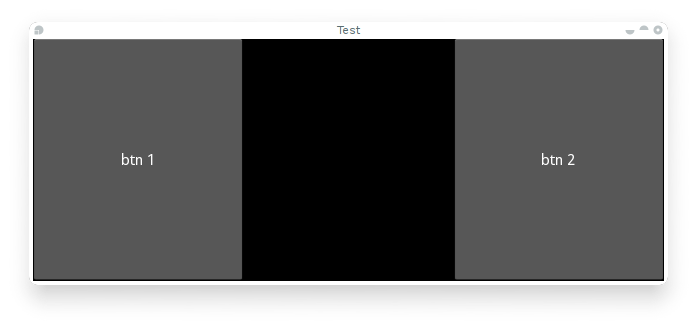

Table Of Contents
Events and Properties¶
Events are an important part of Kivy programming. That may not be surprising to those with GUI development experience, but it’s an important concept for newcomers. Once you understand how events work and how to bind to them, you will see them everywhere in Kivy. They make it easy to build whatever behavior you want into Kivy.
The following illustration shows how events are handled in the Kivy framework.

Introduction to the Event Dispatcher¶
One of the most important base classes of the framework is the
EventDispatcher class. This class allows you to register
event types, and to dispatch them to interested parties (usually other event
dispatchers). The Widget,
Animation and Clock classes are
examples of event dispatchers.
EventDispatcher objects depend on the main loop to generate and handle events.
Main loop¶
As outlined in the illustration above, Kivy has a main loop. This loop is running during all of the application’s lifetime and only quits when exiting the application.
Inside the loop, at every iteration, events are generated from user input, hardware sensors or a couple of other sources, and frames are rendered to the display.
Your application will specify callbacks (more on this later), which are called by the main loop. If a callback takes too long or doesn’t quit at all, the main loop is broken and your app doesn’t work properly anymore.
In Kivy applications, you have to avoid long/infinite loops or sleeping. For example the following code does both:
while True:
animate_something()
time.sleep(.10)
When you run this, the program will never exit your loop, preventing Kivy from
doing all of the other things that need doing. As a result, all you’ll see is a
black window which you won’t be able to interact with. Instead, you need to
“schedule” your animate_something() function to be called repeatedly.
Scheduling a repetitive event¶
You can call a function or a method every X times per second using
schedule_interval(). Here is an example of calling a
function named my_callback 30 times per second:
def my_callback(dt):
print 'My callback is called', dt
Clock.schedule_interval(my_callback, 1 / 30.)
You have two ways of unscheduling a previously scheduled event. The first would be
to use unschedule():
Clock.unschedule(my_callback)
Or, you can return False in your callback, and your event will be automatically unscheduled:
count = 0
def my_callback(dt):
global count
count += 1
if count == 10:
print 'Last call of my callback, bye bye !'
return False
print 'My callback is called'
Clock.schedule_interval(my_callback, 1 / 30.)
Scheduling a one-time event¶
Using schedule_once(), you can call a function “later”,
like in the next frame, or in X seconds:
def my_callback(dt):
print 'My callback is called !'
Clock.schedule_once(my_callback, 1)
This will call my_callback in one second. The second argument is the amount
of time to wait before calling the function, in seconds. However, you can
achieve some other results with special values for the second argument:
- If X is greater than 0, the callback will be called in X seconds
- If X is 0, the callback will be called after the next frame
- If X is -1, the callback will be called before the next frame
The -1 is mostly used when you are already in a scheduled event, and if you want to schedule a call BEFORE the next frame is happening.
A second method for repeating a function call is to first schedule a callback once
with schedule_once(), and a second call to this function
inside the callback itself:
def my_callback(dt):
print 'My callback is called !'
Clock.schedule_once(my_callback, 1)
Clock.schedule_once(my_callback, 1)
While the main loop will try to keep to the schedule as requested, there is some uncertainty as to when exactly a scheduled callback will be called. Sometimes another callback or some other task in the application will take longer than anticipated and thus the timing can be a little off.
In the latter solution to the repetitive callback problem, the next iteration will
be called at least one second after the last iteration ends. With
schedule_interval() however, the callback is called
every second.
Trigger events¶
If you want to schedule a function to be called only once for the next frame, like a trigger, you might be tempted to achieve that like so:
Clock.unschedule(my_callback)
Clock.schedule_once(my_callback, 0)
This way of programming a trigger is expensive, since you’ll always call unschedule, whether or not you’ve even scheduled it. In addition, unschedule needs to iterate the weakref list of the Clock in order to find your callback and remove it. Use a trigger instead:
trigger = Clock.create_trigger(my_callback)
# later
trigger()
Each time you call trigger(), it will schedule a single call of your callback. If it was already scheduled, it will not be rescheduled.
Widget events¶
A widget has 2 default types of events:
- Property event: if your widget changes its position or size, an event is fired.
- Widget-defined event: e.g. an event will be fired for a Button when it’s pressed or released.
For a discussion on how widget touch events managed and propagated, please refer to the Widget touch event bubbling section.
Creating custom events¶
To create an event dispatcher with custom events, you need to register the name of the event in the class and then create a method of the same name.
See the following example:
class MyEventDispatcher(EventDispatcher):
def __init__(self, **kwargs):
self.register_event_type('on_test')
super(MyEventDispatcher, self).__init__(**kwargs)
def do_something(self, value):
# when do_something is called, the 'on_test' event will be
# dispatched with the value
self.dispatch('on_test', value)
def on_test(self, *args):
print "I am dispatched", args
Attaching callbacks¶
To use events, you have to bind callbacks to them. When the event is dispatched, your callbacks will be called with the parameters relevant to that specific event.
A callback can be any python callable, but you need to ensure it accepts the arguments that the event emits. For this, it’s usually safest to accept the *args argument, which will catch all arguments in the args list.
Example:
def my_callback(value, *args):
print "Hello, I got an event!", args
ev = MyEventDispatcher()
ev.bind(on_test=my_callback)
ev.do_something('test')
Pleases refer to the kivy.event.EventDispatcher.bind() method
documentation for more examples on how to attach callbacks.
Introduction to Properties¶
Properties are an awesome way to define events and bind to them. Essentially, they produce events such that when an attribute of your object changes, all properties that reference that attribute are automatically updated.
There are different kinds of properties to describe the type of data you want to handle.
StringPropertyNumericPropertyBoundedNumericPropertyObjectPropertyDictPropertyListPropertyOptionPropertyAliasPropertyBooleanPropertyReferenceListProperty
Declaration of a Property¶
To declare properties, you must declare them at the class level. The class will then do the work to instantiate the real attributes when your object is created. These properties are not attributes: they are mechanisms for creating events based on your attributes:
class MyWidget(Widget):
text = StringProperty('')
When overriding __init__, always accept **kwargs and use super() to call the parent’s __init__ method, passing in your class instance:
def __init__(self, **kwargs):
super(MyWidget, self).__init__(**kwargs)
Dispatching a Property event¶
Kivy properties, by default, provide an on_<property_name> event. This event is called when the value of the property is changed.
注釈
If the new value for the property is equal to the current value, then the on_<property_name> event will not be called.
For example, consider the following code:
1 2 3 4 5 6 7 8 9 10 11 12 | class CustomBtn(Widget):
pressed = ListProperty([0, 0])
def on_touch_down(self, touch):
if self.collide_point(*touch.pos):
self.pressed = touch.pos
return True
return super(CustomBtn, self).on_touch_down(touch)
def on_pressed(self, instance, pos):
print ('pressed at {pos}'.format(pos=pos))
|
In the code above at line 3:
pressed = ListProperty([0, 0])
We define the pressed Property of type ListProperty,
giving it a default value of [0, 0]. From this point forward, the on_pressed
event will be called whenever the value of this property is changed.
At Line 5:
def on_touch_down(self, touch):
if self.collide_point(*touch.pos):
self.pressed = touch.pos
return True
return super(CustomBtn, self).on_touch_down(touch)
We override the on_touch_down() method of the Widget class. Here, we check
for collision of the touch with our widget.
If the touch falls inside of our widget, we change the value of pressed to touch.pos and return True, indicating that we have consumed the touch and don’t want it to propagate any further.
Finally, if the touch falls outside our widget, we call the original event using super(...) and return the result. This allows the touch event propagation to continue as it would normally have occured.
Finally on line 11:
def on_pressed(self, instance, pos):
print ('pressed at {pos}'.format(pos=pos))
We define an on_pressed function that will be called by the property whenever the property value is changed.
注釈
This on_<prop_name> event is called within the class where the property is defined. To monitor/observe any change to a property outside of the class where it’s defined, you should bind to the property as shown below.
Binding to the property
How to monitor changes to a property when all you have access to is a widget instance? You bind to the property:
your_widget_instance.bind(property_name=function_name)
For example, consider the following code:
1 2 3 4 5 6 7 8 9 10 11 12 | class RootWidget(BoxLayout):
def __init__(self, **kwargs):
super(RootWidget, self).__init__(**kwargs)
self.add_widget(Button(text='btn 1'))
cb = CustomBtn()
cb.bind(pressed=self.btn_pressed)
self.add_widget(cb)
self.add_widget(Button(text='btn 2'))
def btn_pressed(self, instance, pos):
print ('pos: printed from root widget: {pos}'.format(pos=.pos))
|
If you run the code as is, you will notice two print statements in the console. One from the on_pressed event that is called inside the CustomBtn class and another from the btn_pressed function that we bind to the property change.
The reason that both functions are called is simple. Binding doesn’t mean overriding. Having both of these functions is redundant and you should generally only use one of the methods of listening/reacting to property changes.
You should also take note of the parameters that are passed to the on_<property_name> event or the function bound to the property.
def btn_pressed(self, instance, pos):
The first parameter is self, which is the instance of the class where this function is defined. You can use an in-line function as follows:
1 2 3 4 5 6 7 | cb = CustomBtn()
def _local_func(instance, pos):
print ('pos: printed from root widget: {pos}'.format(pos=pos))
cb.bind(pressed=_local_func)
self.add_widget(cb)
|
The first parameter would be the instance of the class the property is defined.
The second parameter would be the value, which is the new value of the property.
Here is the complete example, derived from the snippets above, that you can use to copy and paste into an editor to experiment.
1 2 3 4 5 6 7 8 9 10 11 12 13 14 15 16 17 18 19 20 21 22 23 24 25 26 27 28 29 30 31 32 33 34 35 36 37 38 39 40 41 42 | from kivy.app import App
from kivy.uix.widget import Widget
from kivy.uix.button import Button
from kivy.uix.boxlayout import BoxLayout
from kivy.properties import ListProperty
class RootWidget(BoxLayout):
def __init__(self, **kwargs):
super(RootWidget, self).__init__(**kwargs)
self.add_widget(Button(text='btn 1'))
cb = CustomBtn()
cb.bind(pressed=self.btn_pressed)
self.add_widget(cb)
self.add_widget(Button(text='btn 2'))
def btn_pressed(self, instance, pos):
print ('pos: printed from root widget: {pos}'.format(pos=pos))
class CustomBtn(Widget):
pressed = ListProperty([0, 0])
def on_touch_down(self, touch):
if self.collide_point(*touch.pos):
self.pressed = touch.pos
# we consumed the touch. return False here to propagate
# the touch further to the children.
return True
return super(CustomBtn, self).on_touch_down(touch)
def on_pressed(self, instance, pos):
print ('pressed at {pos}'.format(pos=pos))
class TestApp(App):
def build(self):
return RootWidget()
if __name__ == '__main__':
TestApp().run()
|
Running the code above will give you the following output:
Our CustomBtn has no visual representation and thus appears black. You can touch/click on the black area to see the output on your console.
Compound Properties¶
When defining an AliasProperty, you normally define
a getter and a setter function yourself. Here, it falls on to you to define
when the getter and the setter functions are called using the bind argument.
Consider the following code.
1 2 3 4 5 6 7 | cursor_pos = AliasProperty(_get_cursor_pos, None, bind=(
'cursor', 'padding', 'pos', 'size', 'focus',
'scroll_x', 'scroll_y'))
'''Current position of the cursor, in (x, y).
:attr:`cursor_pos` is a :class:`~kivy.properties.AliasProperty`, read-only.
'''
|
Here cursor_pos is a AliasProperty which uses the
getter _get_cursor_pos with the setter part set to None, implying this
is a read only Property.
The bind argument at the end defines that on_cursor_pos event is dispatched when any of the properties used in the bind= argument change.